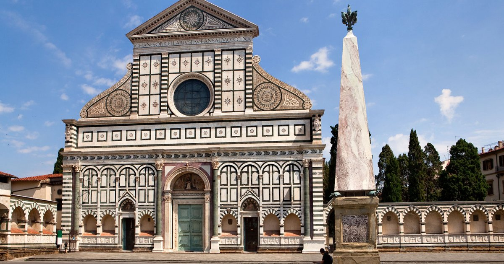

Florencia fue en el siglo XIV la cuna del Renacimiento y concentra una cantidad enorme de obras de arte y arquitectura de aquel período. Hablaremos aquí de tres de las principales iglesias de Florencia.
Florencia fue en el siglo XIV la cuna del Renacimiento y concentra una cantidad enorme de obras de arte y arquitectura de aquel período. Hablaremos aquí de tres de las principales iglesias de Florencia.
La construcción de Santa Maria del Fiore comenzó en 1296 y prosiguió a lo largo del siglo XIV hasta convertirla en la iglesia más grande del mundo en su época. En 1420 comenzó la construcción de la cúpula, todavía hoy la mayor del mundo construida en ladrillo, por el arquitecto Filippo Brunelleschi.
La fachada original de la catedral no se forró hasta la década de 1880, en mármoles blancos, rojos y verdes, similares a los del campanario del siglo XIV.
La basílica de la Santa Croce se construyó en la misma época que Santa Maria del Fiore, en unos terrenos pantanosos entonces situados fuera de las murallas. La fachada neogótica se completó en la década de 1860.
La basílica de la Santa Croce se construyó en la misma época que Santa Maria del Fiore, en unos terrenos pantanosos entonces situados fuera de las murallas. La fachada neogótica se completó en la década de 1860.
 La iglesia de Santa Maria Novella comenzó a construirse en 1246 y se terminó de construir en 1360, aunque la fachada no se acabó hasta 1470.
Santa Maria Novella forma parte de un complejo religioso que incluye la farmacia más antigua de Europa, fundada en 1221 para uso de los frailes y abierta al público desde 1621.